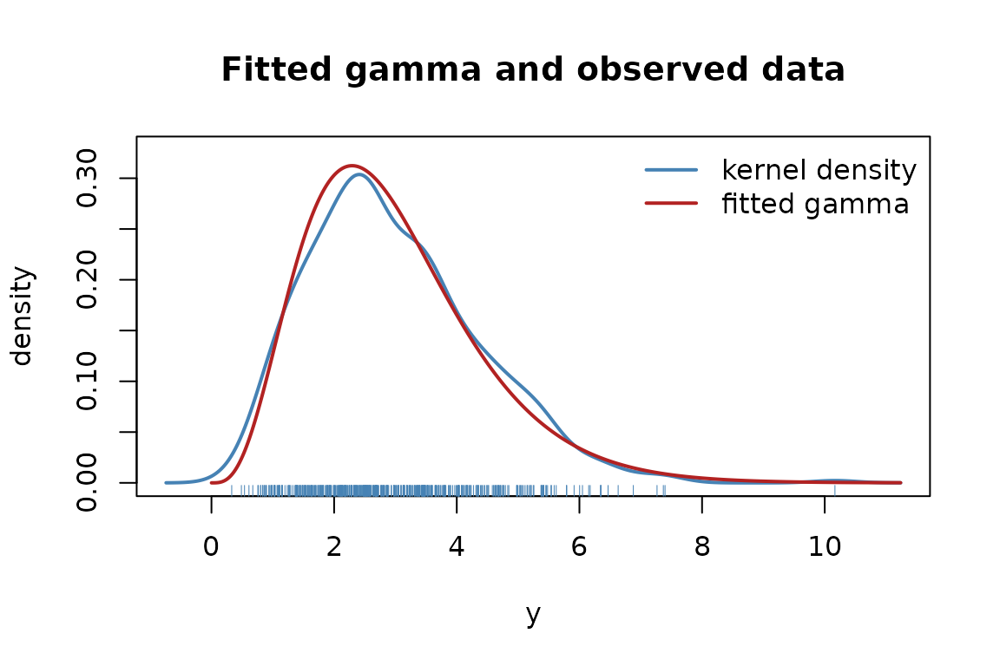
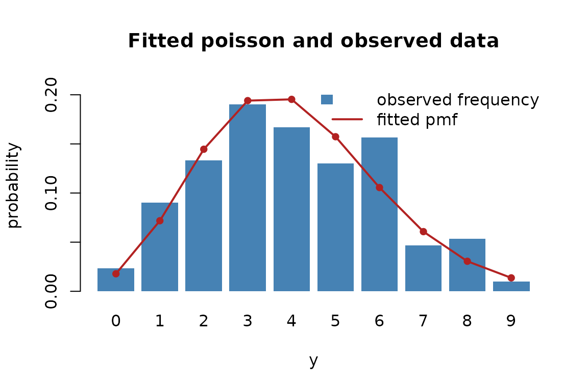

This vignette walks through fitting a distribution to a sample by
maximum likelihood, reading the result, checking it against the data,
and simulating from it. It assumes familiarity with distribution
objects; vignette("defining-a-distribution") is the place
to start otherwise.
A first fit
Every distribution has a constructor. It takes the link functions for its parameters, but the defaults are sensible, so most of the time it is called with no arguments:
d <- gamma2_distrib()
d
#> Distribution: Gamma2
#> Type: Continuous
#> Dimensions: univariate
#>
#> Parameters:
#> mu (mean) | Link: log | Domain: (0, Inf)
#> sigma2 (variance) | Link: log | Domain: (0, Inf)We simulate some data from a known parameter value and fit the distribution back to it. Parameters travel as a named list.
y <- distrib_rng(d, 500, list(mu = 3, sigma2 = 2))
fit <- fit_distrib(d, y)
fit
#> Maximum-likelihood fit: gamma2
#> Observations: 500 Log-likelihood: -844 AIC: 1692 BIC: 1700
#> Method: Fisher scoring iterations: 2 evaluations: f 3, g 3 time: 309 ms
#> Converged: yes (gradient (max-norm) < 1e-06 or |df| < 1e-12 (relative))
#>
#> Parameter scale:
#> Estimate Std. Error 2.5% 97.5%
#> mu 2.9706 0.0634 2.8488 3.0976
#> sigma2 2.0120 0.1498 1.7388 2.3281
#>
#> Link scale:
#> Estimate Std. Error 2.5% 97.5%
#> mu 1.0888 0.0214 1.0469 1.1306
#> sigma2 0.6991 0.0745 0.5532 0.8451The estimates recover the values the sample was generated from, and the print method shows them twice: on the parameter scale, and on the link scale where the fitting actually happened. More on that split below.
Reading the fit
fit_distrib() returns an object that answers the
familiar extractors:
coef(fit)
#> mu sigma2
#> 2.970589 2.012010
vcov(fit)
#> mu sigma2
#> mu 0.004024020 0.005451018
#> sigma2 0.005451018 0.022443720
logLik(fit)
#> 'log Lik.' -844.0323 (df=2)
confint(fit)
#> 2.5% 97.5%
#> mu 2.848824 3.097558
#> sigma2 1.738803 2.328143coef(), vcov() and confint()
all take a scale argument, which returns the same
quantities on the unconstrained scale:
coef(fit, scale = "link")
#> mu sigma2
#> 1.0887603 0.6991342
confint(fit, scale = "link")
#> 2.5% 97.5%
#> mu 1.0469064 1.1306142
#> sigma2 0.5531972 0.8450712The interval on the link scale is symmetric about the estimate, and
the one on the parameter scale is its image under
,
which is why the second is not symmetric. confint() also
takes a level, computed from the stored estimates and
standard errors without refitting:
confint(fit, level = 0.99)
#> 0.5% 99.5%
#> mu 2.811604 3.138565
#> sigma2 1.660868 2.437390The object also carries the information criteria, the number of iterations and the method that was actually used, all visible in the print above.
Why the link scale
A gamma’s mean and variance are positive; a beta’s probability lives
in
;
a Gaussian’s standard deviation is positive. Optimizing those
constrained parameters directly means fighting the boundary. Instead
fit_distrib() optimizes the unconstrained
parameters behind each link —
and
for the gamma — where there is no boundary to hit, using the exact score
and information the package provides on that scale.
The estimates are then mapped back, and so are the intervals. Because a confidence interval is built symmetrically on the link scale and pushed through , its endpoints can never leave the parameter’s domain:
b <- bernoulli_distrib()
fit_distrib(b, rbinom(40, 1, 0.9))
#> Maximum-likelihood fit: bernoulli
#> Observations: 40 Log-likelihood: -10.66 AIC: 23.31 BIC: 25
#> Method: Fisher scoring iterations: 1 evaluations: f 2, g 2 time: 1 ms
#> Converged: yes (gradient (max-norm) < 1e-06 or |df| < 1e-12 (relative))
#>
#> Parameter scale:
#> Estimate Std. Error 2.5% 97.5%
#> mu 0.925 0.0416 0.7918 0.9756
#>
#> Link scale:
#> Estimate Std. Error 2.5% 97.5%
#> mu 2.5123 0.6003 1.3357 3.6889Even with a probability estimate close to one and only forty observations, the interval stays inside — a symmetric interval on the probability scale would have spilled past it.
Choosing how it is optimized
The default is Fisher scoring, which uses the expected information. Two other methods are available, and Fisher scoring and Newton fall back to BFGS if they fail to converge:
fit_newton <- fit_distrib(d, y, method = "newton")
fit_bfgs <- fit_distrib(d, y, method = "bfgs")
c(scoring = as.numeric(logLik(fit)),
newton = as.numeric(logLik(fit_newton)),
bfgs = as.numeric(logLik(fit_bfgs)))
#> scoring newton bfgs
#> -844.0323 -844.0323 -844.0323They agree on the maximum. Fisher scoring is the default because it uses the expected information, which stays well-behaved even where the observed Hessian does not, and that matters for distributions with a non-smooth parameter such as the Laplace.
The optimization runs through optimizers7, and
method also accepts an optimizer object from that package,
which is then used as given. Choosing the optimizer this way also
chooses its stopping rule, its line search and its iteration budget:
library(optimizers7)
fit_lbfgs <- fit_distrib(d, y, method = lbfgs(criterion = crit_grad(1e-12)))
fit_nm <- fit_distrib(d, y, method = nelder_mead(maxit = 5000))
c(lbfgs = as.numeric(logLik(fit_lbfgs)),
nelder_mead = as.numeric(logLik(fit_nm)))
#> lbfgs nelder_mead
#> -844.0323 -844.0323
c(fit_lbfgs@method, fit_nm@method)
#> [1] "L-BFGS" "nelder-mead"The three named strategies fall back to BFGS when they fail to converge; an optimizer supplied explicitly is never replaced, so the method reported is always the method that produced the estimates.
Checking the fit against the data
A fit remembers the data it came from, so it can be drawn over it.
For a continuous distribution plot() shows a kernel density
of the sample with the fitted density on top:
plot(fit)
For a discrete distribution it shows the observed frequencies as bars with the fitted probability mass overlaid, because a kernel density would misrepresent counts:
p <- poisson_distrib()
yp <- distrib_rng(p, 300, list(mu = 4))
plot(fit_distrib(p, yp))
Simulating from the fit
simulate() draws new samples from the fitted
distribution. Each replicate has the same length as the original data,
which makes it a one-liner to build a parametric bootstrap of any
statistic:
sims <- simulate(fit, 200, seed = 1)
dim(sims)
#> [1] 500 200
boot_median <- vapply(sims, median, numeric(1))
quantile(boot_median, c(0.025, 0.975))
#> 2.5% 97.5%
#> 2.597115 2.869105It follows the stats::simulate() contract: a supplied
seed makes the draw reproducible and is reported back on
the result, and the caller’s random stream is left untouched.
Validating a distribution numerically
Before a fit is trusted, and especially before a user-written
distribution is, check_distrib() puts it through thirteen
numerical checks. It confirms that the density integrates to one, that
the distribution function agrees with the density, that the quantile
inverts it, that the generator follows it, and that every analytical
derivative matches finite differences, on both the parameter and the
link scale:
invisible(check_distrib(d, list(mu = 3, sigma2 = 2)))
#> Distribution: gamma2
#> Parameters: mu = 3, sigma2 = 2
#> Observations: 100 Monte Carlo: 200000
#>
#> [OK ] density integrates to 1 5.58e-10
#> [OK ] density is non-negative 1.07e-02
#> [OK ] cdf in [0,1] and non-decreasing 2.46e-02
#> [OK ] cdf agrees with the density 2.32e-11
#> [OK ] quantile/cdf round-trip 5.55e-17
#> [OK ] rng matches the cdf 1.17e+00
#> [OK ] gradient vs finite differences 6.49e-11
#> [OK ] hessian vs finite differences 5.78e-08
#> [OK ] deriv3 vs finite differences 1.75e-10
#> [OK ] deriv4 vs finite differences 6.98e-08
#> [OK ] expected information vs Monte Carlo 1.75e+00
#> [OK ] response derivatives vs finite differences 2.70e-08
#> [OK ] link-scale gradient vs finite differences 5.59e-08
#>
#> All 13 checks passed.Had a mistake crept into an analytical derivative, the corresponding
line would read FAIL, with the size of the discrepancy
printed next to it. It is the fastest way to catch a wrong formula.
Further reading
-
vignette("defining-a-distribution")— defining a new distribution, which then works with everything shown here. -
?fit_distrib,?check_distrib— the full argument lists. -
?distrib_gradient— the derivatives, including whatscale = "link"does.